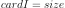
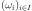
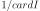

BootstrapExperiment¶
(Source code, png, hires.png, pdf)
{kind=link}
{kind=link}

-
class
BootstrapExperiment(*args)¶ Bootstrap experiment.
- Available constructors:
- BootstrapExperiment(sample)
Parameters: sample : 2-d sequence of float
Points to defined a
UserDefineddistribution .
.See also
Notes
BootstrapExperiment is a random weighted design of experiments. To call the BootstrapExperiment constructor is equivalent to call the
WeightedExperimentconstructor as follows: WeightedExperiment(UserDefined(sample), sample.getSize()).Examples
>>> import openturns as ot >>> ot.RandomGenerator.SetSeed(0) >>> sample = [[i,i+1] for i in range(5)] >>> myPlane = ot.BootstrapExperiment(sample) >>> print(myPlane.generate()) [ v0 v1 ] 0 : [ 4 5 ] 1 : [ 1 2 ] 2 : [ 1 2 ] 3 : [ 1 2 ] 4 : [ 2 3 ] >>> print(myPlane.getDistribution()) UserDefined({x = [0,1], p = 0.2}, {x = [1,2], p = 0.2}, {x = [2,3], p = 0.2}, {x = [3,4], p = 0.2}, {x = [4,5], p = 0.2})
Methods
generate()Generate points according to the type of the experiment. generateWithWeights()Generate points and their associated weight according to the type of the experiment. getClassName()Accessor to the object’s name. getDistribution()Accessor to the distribution. getId()Accessor to the object’s id. getName()Accessor to the object’s name. getShadowedId()Accessor to the object’s shadowed id. getSize()Accessor to the size of the generated sample. getVisibility()Accessor to the object’s visibility state. hasName()Test if the object is named. hasUniformWeights()Ask whether the experiment has uniform weights. hasVisibleName()Test if the object has a distinguishable name. setDistribution(distribution)Accessor to the distribution. setName(name)Accessor to the object’s name. setShadowedId(id)Accessor to the object’s shadowed id. setSize(size)Accessor to the size of the generated sample. setVisibility(visible)Accessor to the object’s visibility state. -
__init__(*args)¶ x.__init__(…) initializes x; see help(type(x)) for signature
-
generate()¶ Generate points according to the type of the experiment.
Returns: sample :
SamplePoints which constitute the design of experiments with . The sampling method is defined by the nature of the weighted experiment.
Examples
>>> import openturns as ot >>> ot.RandomGenerator.SetSeed(0) >>> myExperiment = ot.MonteCarloExperiment(ot.Normal(2), 5) >>> sample = myExperiment.generate() >>> print(sample) [ X0 X1 ] 0 : [ 0.608202 -1.26617 ] 1 : [ -0.438266 1.20548 ] 2 : [ -2.18139 0.350042 ] 3 : [ -0.355007 1.43725 ] 4 : [ 0.810668 0.793156 ]
-
generateWithWeights()¶ Generate points and their associated weight according to the type of the experiment.
Returns: sample :
SampleThe points which constitute the design of experiments. The sampling method is defined by the nature of the experiment.
weights :
Pointof sizeWeights  associated with the points. By default, all the weights are equal to .
Examples
>>> import openturns as ot >>> ot.RandomGenerator.SetSeed(0) >>> myExperiment = ot.MonteCarloExperiment(ot.Normal(2), 5) >>> sample, weights = myExperiment.generateWithWeights() >>> print(sample) [ X0 X1 ] 0 : [ 0.608202 -1.26617 ] 1 : [ -0.438266 1.20548 ] 2 : [ -2.18139 0.350042 ] 3 : [ -0.355007 1.43725 ] 4 : [ 0.810668 0.793156 ] >>> print(weights) [0.2,0.2,0.2,0.2,0.2]
-
getClassName()¶ Accessor to the object’s name.
Returns: class_name : str
The object class name (object.__class__.__name__).
-
getDistribution()¶ Accessor to the distribution.
Returns: distribution :
DistributionDistribution used to generate the set of input data.
-
getId()¶ Accessor to the object’s id.
Returns: id : int
Internal unique identifier.
-
getName()¶ Accessor to the object’s name.
Returns: name : str
The name of the object.
-
getShadowedId()¶ Accessor to the object’s shadowed id.
Returns: id : int
Internal unique identifier.
-
getSize()¶ Accessor to the size of the generated sample.
Returns: size : positive int
Number of points constituting the design of experiments.
-
getVisibility()¶ Accessor to the object’s visibility state.
Returns: visible : bool
Visibility flag.
-
hasName()¶ Test if the object is named.
Returns: hasName : bool
True if the name is not empty.
-
hasUniformWeights()¶ Ask whether the experiment has uniform weights.
Returns: hasUniformWeights : bool
Whether the experiment has uniform weights.
-
hasVisibleName()¶ Test if the object has a distinguishable name.
Returns: hasVisibleName : bool
True if the name is not empty and not the default one.
-
setDistribution(distribution)¶ Accessor to the distribution.
Parameters: distribution :
DistributionDistribution used to generate the set of input data.
-
setName(name)¶ Accessor to the object’s name.
Parameters: name : str
The name of the object.
-
setShadowedId(id)¶ Accessor to the object’s shadowed id.
Parameters: id : int
Internal unique identifier.
-
setSize(size)¶ Accessor to the size of the generated sample.
Parameters: size : positive int
Number of points constituting the design of experiments.
-
setVisibility(visible)¶ Accessor to the object’s visibility state.
Parameters: visible : bool
Visibility flag.